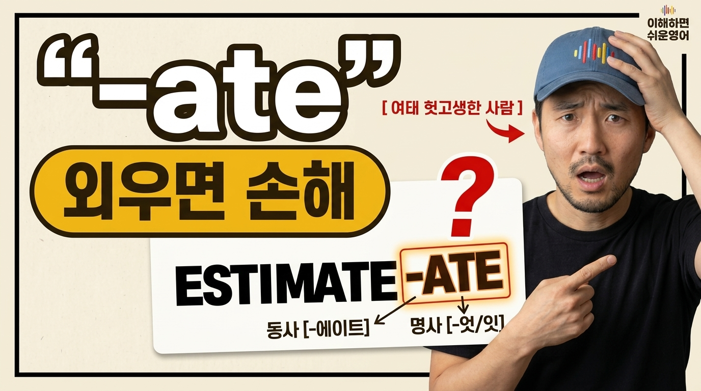
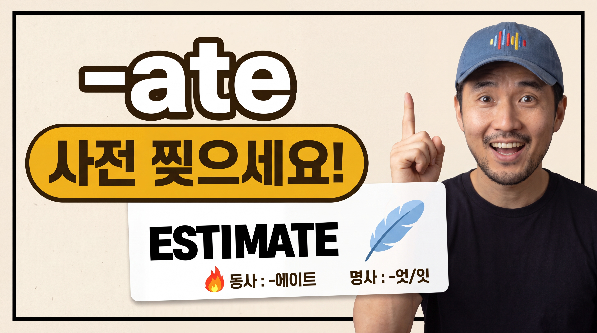
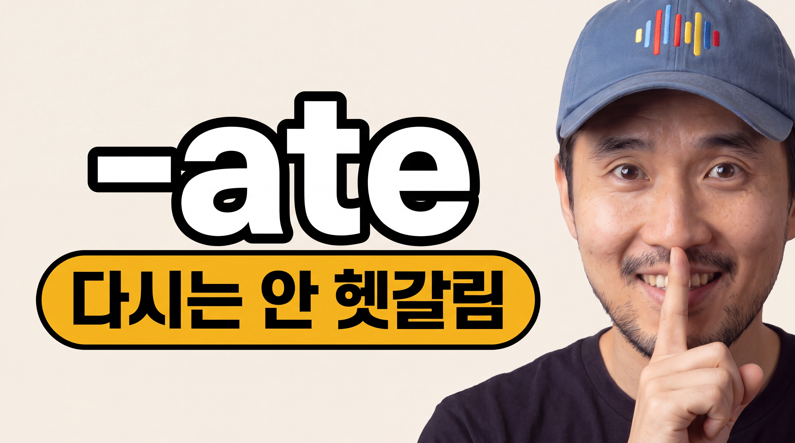
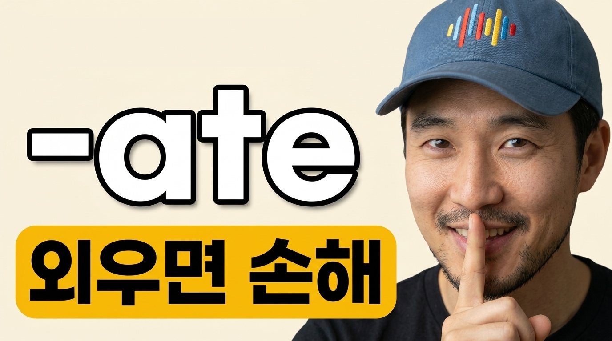

🎬 YOUTUBE UPLOAD PACKAGE · EP19
-ate 동사/명사 발음 차이 (estimate, graduate...)
렌더링 완료 · 업로드 준비 완료
🎥 렌더링 영상 미리보기 (video.mp4)
⬇️ 다운로드
🖼️ 썸네일 시안 4종 (브랜드 모자 & 로고 완비)
A/B 테스트 활용

★ 채택 메인
시안 A: 충격/멘붕형 (동사·명사 분기 화살표)

A/B 후보 · 실사형
시안 B: 사전 찢으세요! (ESTIMATE 카드 + 동사/명사 에너지 비교)

A/B 후보 (CTR 등급 A, 8.8~10.9% 1위)
시안 C: 안심/확신 해결형

모바일 특화 (얼굴 50%)
익스트림 클로즈업: 쉿! 시크릿 제스처
🏷️ 확정 제목
헷갈리던 -ate 발음 차이 이 원리 하나 알고 나니 입에서 바로 구분됩니다 | 영어 발음 차이
📊 제목 A/B 테스트 시안 (CTR 진단 기준)
[A/B 테스트용 제목 시안 (대시보드 CTR 진단 완료)]
• (채택) C안 [CTR 등급: A | 8.8% ~ 10.9%]: 헷갈리던 -ate 발음 차이 이 원리 하나 알고 나니 입에서 바로 구분됩니다 | 영어 발음 차이
• B안 [CTR 등급: A- | 7.3% ~ 9.1%]: 훅 문구만 보존됨 — "매번 멈칫했는데 소리 나는 길이 따로 있네요"
• A안 [CTR 등급: B+ | 5.4% ~ 7.2%, ★ 실제 게시됨]: 분명 똑같이 적힌 -ate 끝소리를 원어민들은 왜 다르게 흘릴까 궁금했습니다 | 영어 발음 원리
📝 영상 설명 (타임라인 포함)
estimate, graduate, separate, certificate, moderate, delegate... 스펠링은 분명 똑같은데 동사일 땐 '에이트'로 또렷하게, 명사·형용사일 땐 힘 빠진 '엇/잇'으로 들리는 걸 눈치채셨나요?
이걸 단어마다 따로 외우려니 영어가 끝없는 암기처럼 느껴졌던 겁니다. 사실 이건 예외가 아니라 딱 하나의 강세-모음축약 원리로 전부 설명됩니다.
오늘 이 원리 하나만 기억하시면, 처음 보는 -ate 단어도 사전 없이 바로 구분해서 읽을 수 있습니다.
「이해하면 쉬운영어」입니다. 왕초보도 이해할 수 있게, 소리 에너지의 물리적 원리로 설명합니다.
📌 오늘 배우는 내용
・estimate/graduate 동사·명사 발음이 다른 이유 (1음절 제1강세는 공통, 끝소리 에너지가 다름)
・동사일 때: 끝의 -ate까지 힘을 살려 '에이트'
・명사·형용사일 때: 앞머리만 힘주고 뒤는 힘 빼서 '엇/잇'
・실전 3회 반복 낭독: estimate(견적서) / separate(식당 계산) / certificate(자격증)
・반전 꿀팁: chocolate, climate, private도 전부 같은 원리
・실전 퀴즈 2라운드 (moderate, delegate)
・문장 속 듣기 트레이닝 + 한 장 요약 치트시트
⏱️ 챕터 타임라인
0:00 estimate, graduate — 왜 소리가 다를까?
0:30 채널 소개 & 핵심 공식 선언
0:53 소리의 진짜 비밀: 끝소리 에너지 법칙
1:43 1번 실전: estimate (견적서 맥락)
2:27 2번 실전: separate (식당 계산 맥락)
3:17 3번 실전: certificate (자격증 맥락)
4:10 반전: 초콜릿도 이 원리였다 (chocolate, climate, private)
5:04 실전 퀴즈 1라운드 (moderate)
5:39 실전 퀴즈 2라운드 (delegate)
6:12 문장 속에서 듣기 트레이닝
6:45 한 장 요약 총정리
7:14 엔딩
영어는 무작정 외우는 것이 아니라, 소리의 원리를 이해하는 것입니다.
구독과 좋아요는 다음 영상 제작에 큰 힘이 됩니다.
#영어발음 #파닉스 #영어발음차이 #영어읽기 #왕초보영어 #영어공부 #영단어 #발음원리 #성인영어 #기초영어
📌 고정 댓글
📌 오늘 영상 핵심 요약 (화면 캡처 치트시트)
1. -ate로 끝나는 단어가 동사(행동)일 땐 ➔ 끝까지 힘을 살려 또렷하게 '에이트'!
2. -ate로 끝나는 단어가 명사·형용사(이름/상태)일 땐 ➔ 앞머리만 힘주고 뒤는 힘을 빼서 '엇/잇'!
3. estimate, graduate, separate, certificate, moderate, delegate, chocolate, climate, private 전부 같은 원리!
💡 질문: estimate처럼 여러분이 늘 헷갈렸던 -ate 단어가 또 있나요? 댓글로 남겨주시면 다음 영상에 반영하겠습니다!
🏷️ 추천 태그
🌍
글로벌 7개국 다국어 자막 & 메타데이터 원클릭 패키지
GLOBAL EXPANSION
유튜브 알고리즘이 전 세계 시청자에게 추천할 수 있도록 한국어 음성에 맞춘 영어, 일본어, 중국어 번체, 중국어 간체, 스페인어, 베트남어 자막(.srt) 및 번역 제목/설명을 준비했습니다.
🇺🇸 English Subtitle File (.srt)
71개 전체 문장 정밀 싱크 완료 · 전 세계 공용 & 유튜브 SEO 인덱싱용
⬇️ subtitles-en.srt download
🏷️ English 번역 제목
Why Does "-ate" Sound Different in estimate vs. graduate? | English Pronunciation Rule
📝 English 번역 설명 (타임스탬프 챕터 포함)
estimate, graduate, separate, certificate, moderate, delegate... The spelling never changes, but did you notice the verb form rings out with a clear "-ate" while the noun/adjective form fades into a soft "-it"?
Trying to memorize each one as a random exception makes English feel exhausting. But this isn't an exception at all — it's explained by a single stress-and-vowel-reduction rule.
Remember just this one principle today, and you'll be able to read brand-new "-ate" words correctly without ever checking a dictionary.
Welcome to "Easy English When Understood." We explain English through the physical mechanics of sound energy so even complete beginners can master it.
📌 What you will learn today
• Why estimate/graduate sound different as verbs vs. nouns (same primary stress, different ending energy)
• As a verb: keep the energy all the way through — "-ate"
• As a noun/adjective: stress the front, drop the end — "-it"
• 3x practice drills: estimate (a quote), separate (splitting a restaurant bill), certificate
• Plot twist: chocolate, climate, and private follow the exact same rule
• 2-round instant quiz (moderate, delegate)
• Sentence listening practice + 1-page summary cheat sheet
⏱️ Chapters
0:00 estimate, graduate — why do they sound different?
0:30 Channel intro & the core formula
0:53 The real secret: the end-sound energy rule
1:43 Practice 1: estimate (getting a quote)
2:27 Practice 2: separate (splitting the check)
3:17 Practice 3: certificate
4:10 Plot twist: chocolate follows the same rule (climate, private too)
5:04 Quiz round 1 (moderate)
5:39 Quiz round 2 (delegate)
6:12 Listening practice in full sentences
6:45 1-page summary
7:14 Closing
#EnglishPronunciation #Phonics #LearnEnglish #EnglishSpeaking #PronunciationRules #AdultPhonics #BeginnerEnglish #VowelReduction
🇯🇵 日本語 Subtitle File (.srt)
71개 전체 문장 정밀 싱크 완료 · 일본 영어 학습 시청자 타겟
⬇️ subtitles-ja.srt ダウンロード
🏷️ 日本語 번역 제목
estimateとgraduateの「-ate」の音が違う理由 | 大人のための英語発音ルール
📝 日本語 번역 설명 (타임스탬프 챕터 포함)
estimate, graduate, separate, certificate, moderate, delegate... スペルは全く同じなのに、動詞のときは「エイト」とはっきり、名詞・形容詞のときは力の抜けた「エット」に聞こえること、気づいていましたか？
単語ごとに例外として暗記しようとするから、英語が終わりのない暗記作業に感じられていたのです。実はこれ、たった1つの「アクセントと母音の弱化」の原理だけで全部説明できます。
今日この原理を1つ覚えるだけで、初めて見る-ate単語も辞書なしで正しく読めるようになります。
「理解すれば簡単な英語」へようこそ。初心者でも腑に落ちるよう、発声エネルギーの物理的な仕組みから解説します。
📌 今回のレッスン内容
・estimate/graduateの動詞・名詞で発音が違う理由（第一アクセントは共通、語尾のエネルギーが違う）
・動詞のとき：語尾の-ateまで力を生かして「エイト」
・名詞・形容詞のとき：先頭だけ力を入れ、語尾は力を抜いて「エット」
・実戦3回反復音読：estimate（見積書）／separate（レストランの会計）／certificate（資格証）
・どんでん返し：chocolate, climate, privateも全部同じ原理
・実戦クイズ2ラウンド（moderate, delegate）
・文章の中で聞き取るトレーニング＋1枚まとめチートシート
⏱️ チャプター
0:00 estimate, graduate — なぜ音が違うのか？
0:30 チャンネル紹介＆核心公式の宣言
0:53 音の本当の秘密：語尾エネルギーの法則
1:43 実戦1：estimate（見積書）
2:27 実戦2：separate（レストランの会計）
3:17 実戦3：certificate（資格証）
4:10 どんでん返し：チョコレートもこの原理だった
5:04 実戦クイズ 第1ラウンド（moderate）
5:39 実戦クイズ 第2ラウンド（delegate）
6:12 文章の中で聞き取りトレーニング
6:45 1枚まとめ総整理
7:14 エンディング
#英語発音 #フォニックス #大人のやり直し英語 #発音のルール #英語初心者 #英語学習 #ネイティブ発音
🇹🇼 繁體中文 Subtitle File (.srt)
71개 전체 문장 정밀 싱크 완료 · 대만/홍콩 시청자 타겟
⬇️ subtitles-zh-tw.srt 下載
🏷️ 繁體中文 번역 제목
estimate 和 graduate 的「-ate」發音為什麼不一樣？| 成人英語發音規則
📝 繁體中文 번역 설명 (타임스탬프 챕터 포함)
estimate, graduate, separate, certificate, moderate, delegate... 拼寫明明完全一樣，但你有沒有發現動詞時讀成清楚的「-ate」，名詞、形容詞時卻讀成無力的「-it」？
如果把每個單字都當成例外死記硬背，學英語當然覺得無窮無盡。其實這完全不是例外，只靠「重音與母音弱化」這一個原理就能全部說明。
今天只要記住這一個原理，就算是第一次看到的 -ate 單字，也能不查字典直接讀對。
歡迎來到「理解就變簡單的英語」。我們從發音能量的物理原理出發，讓初學者也能徹底理解。
⏱️ 時間戳記
0:00 estimate, graduate — 為什麼發音不一樣？
0:30 頻道介紹＆核心公式宣言
0:53 聲音的真正秘密：結尾能量法則
1:43 實戰1：estimate（估價單情境）
2:27 實戰2：separate（餐廳結帳情境）
3:17 實戰3：certificate（證書情境）
4:10 反轉真相：巧克力也是同樣的原理
5:04 實戰測驗 第1回合（moderate）
5:39 實戰測驗 第2回合（delegate）
6:12 句子聽力訓練
6:45 一張圖精華總結
7:14 結語
#英語發音 #自然拼讀 #成人學英語 #英文發音規則 #零基礎英語 #Phonics
🇨🇳 简体中文 Subtitle File (.srt)
71개 전체 문장 정밀 싱크 완료 · 싱가포르/화교권 시청자 타겟
⬇️ subtitles-zh-cn.srt 下载
🏷️ 简体中文 번역 제목
estimate 和 graduate 的“-ate”发音为什么不一样？| 成人英语发音规则
📝 简体中文 번역 설명 (타임스탬프 챕터 포함)
estimate, graduate, separate, certificate, moderate, delegate... 拼写明明完全一样，但你有没有发现动词时读成清楚的“-ate”，名词、形容词时却读成无力的“-it”？
如果把每个单词都当成例外死记硬背，学英语当然觉得无穷无尽。其实这完全不是例外，只靠“重音与元音弱化”这一个原理就能全部说明。
今天只要记住这一个原理，就算是第一次看到的 -ate 单词，也能不查字典直接读对。
欢迎来到“理解就变简单的英语”。我们从发音能量的物理原理出发，让初学者也能彻底理解。
⏱️ 时间戳
0:00 estimate, graduate — 为什么发音不一样？
0:30 频道介绍＆核心公式宣言
0:53 声音的真正秘密：结尾能量法则
1:43 实战1：estimate（报价单情境）
2:27 实战2：separate（餐厅结账情境）
3:17 实战3：certificate（证书情境）
4:10 反转真相：巧克力也是同样的原理
5:04 实战测验 第1回合（moderate）
5:39 实战测验 第2回合（delegate）
6:12 句子听力训练
6:45 一张图精华总结
7:14 结语
#英语发音 #自然拼读 #成人学英语 #英语发音规则 #零基础英语 #Phonics
🇪🇸 Español Subtitle File (.srt)
71개 전체 문장 정밀 싱크 완료 · 스페인어권 & 미국 히스패닉 타겟
⬇️ subtitles-es.srt descargar
🏷️ Español 번역 제목
¿Por qué "-ate" suena distinto en estimate y graduate? | Regla de pronunciación en inglés
📝 Español 번역 설명 (타임스탬프 챕터 포함)
estimate, graduate, separate, certificate, moderate, delegate... La ortografía nunca cambia, pero ¿notaste que la forma verbal suena con un claro "-ate" mientras que la forma de sustantivo o adjetivo se apaga en un suave "-it"?
Memorizar cada palabra como una excepción aleatoria hace que el inglés se sienta agotador. ¡Pero esto no es una excepción! Se explica con una sola regla de acento y reducción vocálica.
Recuerda solo este principio hoy, y podrás leer correctamente cualquier palabra nueva en "-ate" sin consultar el diccionario.
Bienvenidos a "Inglés Fácil Cuando se Entiende". Explicamos el inglés a través de la mecánica física de la energía del sonido para que cualquiera lo domine.
⏱️ Capítulos
0:00 estimate, graduate — ¿por qué suenan distinto?
0:30 Introducción del canal y la fórmula clave
0:53 El verdadero secreto: la regla de la energía final
1:43 Práctica 1: estimate (pedir un presupuesto)
2:27 Práctica 2: separate (la cuenta en el restaurante)
3:17 Práctica 3: certificate
4:10 Giro sorpresa: el chocolate sigue la misma regla
5:04 Quiz ronda 1 (moderate)
5:39 Quiz ronda 2 (delegate)
6:12 Práctica de escucha en oraciones
6:45 Hoja de resumen
7:14 Despedida
#PronunciacionIngles #FoneticaIngles #InglesDesdeCero #AprenderIngles #InglesParaAdultos
🇻🇳 Tiếng Việt Subtitle File (.srt)
71개 전체 문장 정밀 싱크 완료 · 베트남 영어 학습 시청자 타겟
⬇️ subtitles-vi.srt tải xuống
🏷️ Tiếng Việt 번역 제목
Vì sao "-ate" trong estimate và graduate lại phát âm khác nhau? | Quy tắc phát âm tiếng Anh
📝 Tiếng Việt 번역 설명 (타임스탬프 챕터 포함)
estimate, graduate, separate, certificate, moderate, delegate... Cách viết không hề đổi, nhưng bạn có để ý dạng động từ đọc rõ ràng "-ate" còn dạng danh từ/tính từ lại yếu đi thành "-it" không?
Nếu cứ học vẹt từng từ như một ngoại lệ riêng lẻ, tiếng Anh sẽ mãi cảm thấy vô tận. Nhưng đây hoàn toàn không phải ngoại lệ — chỉ một quy tắc trọng âm và giảm nguyên âm giải thích được tất cả.
Chỉ cần nhớ nguyên lý này hôm nay, bạn sẽ đọc đúng bất kỳ từ "-ate" mới nào mà không cần tra từ điển.
Chào mừng bạn đến với "Hiểu Là Tiếng Anh Dễ Dàng". Chúng tôi giải thích tiếng Anh qua cơ chế vật lý của năng lượng âm thanh để người mới bắt đầu cũng hiểu sâu sắc.
⏱️ Dấu mốc thời gian
0:00 estimate, graduate — vì sao phát âm khác nhau?
0:30 Giới thiệu kênh & công thức cốt lõi
0:53 Bí mật thật sự: quy tắc năng lượng âm cuối
1:43 Thực hành 1: estimate (báo giá)
2:27 Thực hành 2: separate (tính tiền nhà hàng)
3:17 Thực hành 3: certificate
4:10 Bất ngờ: chocolate cũng theo đúng quy tắc này
5:04 Đố vui vòng 1 (moderate)
5:39 Đố vui vòng 2 (delegate)
6:12 Luyện nghe trong câu
6:45 Trang tổng kết
7:14 Lời kết
#PhatAmTiengAnh #HocTiengAnh #TiengAnhGiaoTiep #TuHocTiengAnh #TiengAnhChoNguoiMoiBatDau
🇰🇷 한국어 字幕파일 (.srt)
원본 자막 · 실측 whisper 타임스탬프 기준
⬇️ subtitles-ko.srt 다운로드
🏷️ 한국어 원본 제목
헷갈리던 -ate 발음 차이 이 원리 하나 알고 나니 입에서 바로 구분됩니다 | 영어 발음 차이
📝 한국어 원본 설명
estimate, graduate, separate, certificate, moderate, delegate... 스펠링은 분명 똑같은데 동사일 땐 '에이트'로 또렷하게, 명사·형용사일 땐 힘 빠진 '엇/잇'으로 들리는 걸 눈치채셨나요?
이걸 단어마다 따로 외우려니 영어가 끝없는 암기처럼 느껴졌던 겁니다. 사실 이건 예외가 아니라 딱 하나의 강세-모음축약 원리로 전부 설명됩니다.
오늘 이 원리 하나만 기억하시면, 처음 보는 -ate 단어도 사전 없이 바로 구분해서 읽을 수 있습니다.
「이해하면 쉬운영어」입니다. 왕초보도 이해할 수 있게, 소리 에너지의 물리적 원리로 설명합니다.
📌 오늘 배우는 내용
・estimate/graduate 동사·명사 발음이 다른 이유 (1음절 제1강세는 공통, 끝소리 에너지가 다름)
・동사일 때: 끝의 -ate까지 힘을 살려 '에이트'
・명사·형용사일 때: 앞머리만 힘주고 뒤는 힘 빼서 '엇/잇'
・실전 3회 반복 낭독: estimate(견적서) / separate(식당 계산) / certificate(자격증)
・반전 꿀팁: chocolate, climate, private도 전부 같은 원리
・실전 퀴즈 2라운드 (moderate, delegate)
・문장 속 듣기 트레이닝 + 한 장 요약 치트시트
⏱️ 챕터 타임라인
0:00 estimate, graduate — 왜 소리가 다를까?
0:30 채널 소개 & 핵심 공식 선언
0:53 소리의 진짜 비밀: 끝소리 에너지 법칙
1:43 1번 실전: estimate (견적서 맥락)
2:27 2번 실전: separate (식당 계산 맥락)
3:17 3번 실전: certificate (자격증 맥락)
4:10 반전: 초콜릿도 이 원리였다 (chocolate, climate, private)
5:04 실전 퀴즈 1라운드 (moderate)
5:39 실전 퀴즈 2라운드 (delegate)
6:12 문장 속에서 듣기 트레이닝
6:45 한 장 요약 총정리
7:14 엔딩
영어는 무작정 외우는 것이 아니라, 소리의 원리를 이해하는 것입니다.
구독과 좋아요는 다음 영상 제작에 큰 힘이 됩니다.
#영어발음 #파닉스 #영어발음차이 #영어읽기 #왕초보영어 #영어공부 #영단어 #발음원리 #성인영어 #기초영어
💡 YouTube Studio 3분 등록법:
1. 유튜브 스튜디오 영상 수정 ➔ 왼쪽 [자막] 메뉴 클릭
2. [언어 추가] 클릭 후 원하는 언어(영어, 일본어, 중국어 번체, 스페인어 등) 추가
3. 각 언어의 [제목 및 설명]에 위 번역문을 복사 붙여넣고, [자막]에 위 다운로드한
1. 유튜브 스튜디오 영상 수정 ➔ 왼쪽 [자막] 메뉴 클릭
2. [언어 추가] 클릭 후 원하는 언어(영어, 일본어, 중국어 번체, 스페인어 등) 추가
3. 각 언어의 [제목 및 설명]에 위 번역문을 복사 붙여넣고, [자막]에 위 다운로드한
.srt 파일을 업로드하면 즉시 완료됩니다!
⚙️ 유튜브 Studio 필수 설정 항목
권장 예약 일시
2026-09-26(토) 20:00 KST
최종 화면 (엔드스크린) 연결
직전 편 EP18 (묵음 자음 KN-/-MB/WR-) 연결
끝 5초(7:30~7:35) 비워둠
📋 업로드 실행 체크리스트